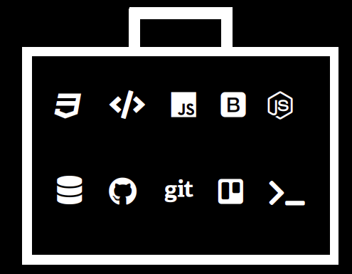

Diana Moreno
Nowadays, I am a Full Stack Web Development student at Skylab Coding Bootcamp.
I decided to change my career a few months ago, so I had to package and leave the Administration and Accountancy’s world behind, starting a new whole tech path.
Since I discovered this field, I haven’t stopped learning, and I love it.
